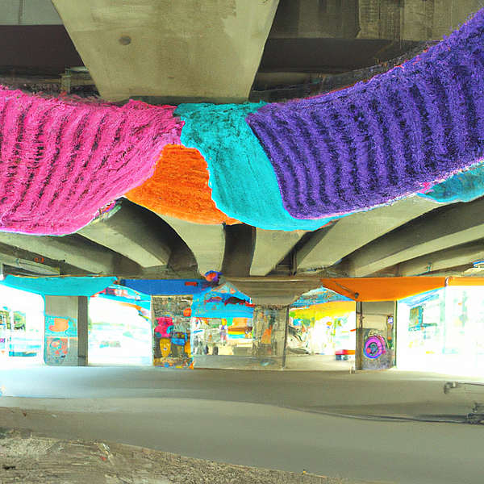
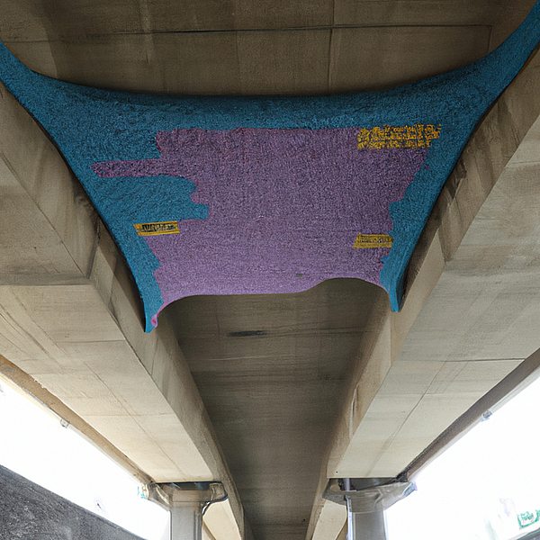
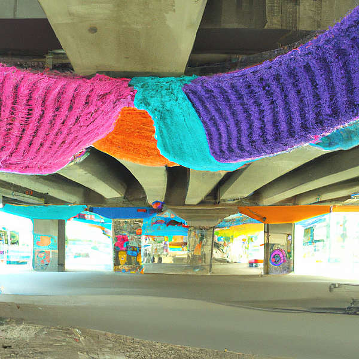
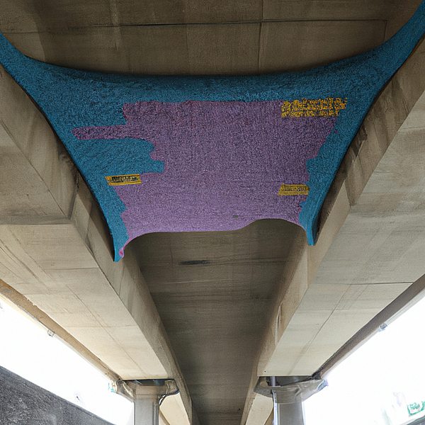

The idea is to create a knitting instalation under a bridge. The patterns of the knitting instalation are gonna be the waves of the brains of people walking under it. The result is going to be showing up on top of the underside of the bridge. The wool is going to be reused constantly to be able to keep it dynamic. How are the waves of people gonna be meassured? With sensors on top of the under side of the bridge (probably doesn't exist). Thanks to the perlin noise we can create smooth waves. Probably the knitting installation is only going to be able to show certain amount of people's waves at the same time (same as my algorithm so far, otherwise it collapses).
 


